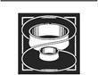

Damane
Yolkapısı açılırken Egwene atından indi ve Liandrin geçmelerini işaret edince tüylü kısrağı dikkatle dışarı çıkardı. Buna rağmen birden yavaşlamış gibi olduklarından, o da Bela da, Yolkapısı'nın açılmasıyla dümdüz olan çimenlerde tökezlediler. Sık bir çalılık Yolkapısı'nın çevresini sararak onu gizlemişti. Yakınlarda sadece birkaç ağaç vardı ve bir sabah meltemi Tar Valon'dakilerden yalnızca biraz daha fazla renkli olan yaprakları sallıyordu.
Arkadaşlarının arkasından belirmesini izlerken orada bir dakika kadar durmuştu ki, başka kişilerin de orada, kapıların diğer tarafında gözden uzakta olduklarını fark etti. Onları fark ettiği zaman kararsızca baktı; hiç görmediği kadar tuhaf bir gruptular ve Egwene Tümentepe'deki savaş hakkında çok fazla söylenti duymuştu.
Sayıları en az elliyi bulan, göğüslerinde uçları birbirini örten çelik levhalar ve şekli böcek kafalarını andıran miğferler içindeki zırhlı adamlar, eyerlerinde oturmuş veya atlarının yanında durmuş, ona ve beliren kadınlara bakıyor, Yolkapısı'na bakıyor, kendi aralarında bir şeyler mırıldanıyordu. Aralarında başı tek açık olan, kalçasında varaklı ve boyalı miğferini tutarak duran esmer suratlı, kanca burunlu adam, gördüğü şeyler karşısında hayrete düşmüş gibiydi. Askerlerin yanında kadınlar da vardı. Kadınlardan ikisi sade, düz griden giysiler giymiş, gümüşten iri tasmalar takmışlardı ve ikisi de hemen arkasında, kulağına bir şeyler söyleyecek gibi yakında duran başka bir kadınla birlikte, Yolkapısı'ndan çıkanlara dikkatle bakıyorlardı. Biraz aralıklı olarak duran diğer iki kadının üzerinde, bileklerinin hayli üzerinde biten geniş, bölünmüş etekler ve göğüsleriyle eteklerine çatallı yıldırımlar işlenmiş paneller vardı. Aralarında en tuhafı, bol siyah pantolonlar içinde, belden yukarısı çıplak, sekiz kaslı adam tarafından taşınan bir tahtırevana uzanmış son kadındı. Kafatasının yanları tıraşlanmış, siyah saçlarının yalnızca tepedeki bir bölümü omuzlarına salınmıştı. Mavi ovaller üzerine çiçekler ve kuşlar işlenmiş uzun, krem renkli cüppesi, pilili beyaz eteğini gösterecek şekilde özenle düzenlenmişti ve en az iki buçuk santim uzunluğundaki tırnakları, iki elinin iki parmağında da maviye boyanmıştı.
"Liandrin Sedai," dedi Egwene huzursuzca, "bu insanların kim olduğunu biliyor musun?" Arkadaşları atlarına binip kaçmayı düşünür gibi dizginleriyle oynuyordu, ama Liandrin Avendesora yaprağını yerine koydu ve Yolkapısı kapanmaya başlarken güvenli bir hareketle öne adım attı.
"Yüce Leydi Suroth?" dedi Liandrin yarı sorar, yarı açıklama yaparak.
Tahtırevandaki kadın hafifçe başını eğdi. "Sen Liandrin'sin." Telaffuzu kötüydü ve Egwene'in kadının ne dediğini anlaması bir an sürdü. "Aes Sedai," diye ekledi Suroth dudağını bükerek ve askerlerin arasında bir mırıldanma baş gösterdi. "Buradaki işimizi çabucak bitirmeliyiz, Liandrin. Devriyeler var ve burada bulunmak işimize gelmez. Sen de Gerçeği Arayanlar'ın muamelesinden benden daha çok hoşlanmazsın. Turak gittiğimin farkına varmadan Falme'ye dönmeye niyetliyim."
"Neden bahsediyorsunuz?" diye sordu Nynaeve. "O neden bahsediyor, Liandrin?"
Liandrin bir elini Nynaeve'in, diğer elini Egwene'in omzuna koymuştu. "Bunlar size anlatılan iki kişi. Başka biri de var." Başıyla Elayne'i işaret etti. "Bu, Andor'un Kız-veliahtı."
Giysilerinde yıldırımlar olan iki kadın, Yolkapısı'nın önündeki kafileye yaklaşmaktaydı -Egwene kadınların ellerinde gümüşü andıran bir tür metalden makaralar taşıdıklarını fark etti- ve başı açık asker de onlarla geliyordu. Adam elini omzunun üzerinden çıkan kılıç kabzasının yanına götürmüyordu ve yüzünde rahat bir gülümseme vardı, fakat Egwene yine de, kısık gözlerle onu izliyordu. Liandrin'de hiçbir endişe belirtisi yoktu; olsaydı, Egwene hemen o an Bela'nın sırtına atlardı.
"Liandrin Sedai," dedi telaşla, "bu insanlar kim? Onlar da buraya Rand ile diğerlerine yardım etmek için mi geldi?"
Kanca burunlu adam, aniden Min ile Elayne'i yakalarından kavradı ve bir an sonra sanki her şey bir anda oldu. Adam bir küfür etti ve bir kadın, belki de birden çok kadın çığlık attı; Egwene bundan emin olamadı. Meltem birden Liandrin'in öfke dolu haykırışını toz ve yaprak dumanlarına katıp sürükleyen ve ağaçların eğilip gıcırdamasına neden olan bir boraya dönüşmüştü. Atlar şahlandı ve tiz seslerle kişnedi. Ve kadınlardan biri uzanıp Egwene'in boynuna bir şey taktı.
Pelerini yelken gibi dalgalanan Egwene, rüzgâra karşı kendisini hazırlayarak ona düz metalden bir tasma gibi gelen şeyi çekiştirdi. Tasma yerinden oynamıyordu, telaşlı parmaklarına tek parça gibi gelse de Egwene bir tür kopçası olması gerektiğini biliyordu. Kadının elindeki gümüşi kangal artık Egwene'in omzundan aşağı sarkıyor, diğer ucu kadının sol bileğindeki parlak bir bilezikle birleşiyordu. Egwene elini sıkıca yumruk yapıp kadının sağ gözüne olabildiğince sert bir yumruk indirdi -ve kendi başı çınlayarak sendeleyip dizlerinin üzerine çöktü. Sanki iriyarı bir adam yüzüne bir darbe indirmişti.
Yine düzgün görebildiğinde, rüzgâr dinmişti. Aralarında Bela ile Elayne'in kısrağı da bulunan birkaç at boşta geziyordu ve askerlerden bazıları küfrederek yerden kalkıyordu. Liandrin sakince elbisesindeki toz ve yaprakları silkeliyordu. Min dizlerinin üzerine çökmüş, ellerine dayanarak duruyor, sersemlemiş bir halde daha fazla doğrulmaya çalışıyordu. Kanca burunlu adam Min'in başının üzerinde duruyor, elinden kan sızıyordu. Nynaeve ile Elayne ortalıkta yoktu, Nynaeve'in kısrağı da gitmişti. Askerlerden bazıları ve kadın çiftlerinden biri de öyle. Diğer iki kadın hâlâ oradaydı ve Egwene artık onların da kendisini hâlâ başında duran kadına bağlayanın eşi, gümüş bir kordonla birbirlerine bağlı olduklarını görebiliyordu.
Bu kadın da Egwene'in yanında bağdaş kurmuş, yanağını ovuşturuyordu; sol gözünün etrafında şimdiden bir morluk oluşmaya başlamıştı. Uzun, koyu renkli saçları ve iri, kahverengi gözleri olan kadın güzeldi ve Nynaeve'den belki on yıl büyüktü. "İlk dersin," dedi üzerine basa basa. Sesi düşmanca değildi, kulağa neredeyse arkadaşça geliyordu. "Seni bu defalık daha fazla cezalandırmayacağım, zira yeni yakalanan bir damane'ye karşı daha dikkatli olmam gerekirdi. Bunu bil. Sen bir damane, yani Yularlı Kişisin, ben de bir sul'dam, yani Yular Tutan'ım. Damane ile sul'dam birleştiğinde, sul'dam'ın hissettiği acıyı, damane iki misliyle hisseder. Ölse bile. Bu yüzden sul'dam'ına hiçbir şekilde vuramayacağını ve sul'dam'ını kendinden bile çok koruman gerektiğini hatırlamalısın. Benim adım Renna. Senin adın ne?"
"Ben... dediğin şey değilim," diye mırıldandı Egwene. Tasmayı tekrar çekti-, tasma eskisi gibi kımıldamadı. Kadını yere yıkıp bileziği bileğinden çıkarmaya çalışmayı düşündü, ama bunu aklından çıkardı. Askerler onu durdurmaya çalışmasa bile -o âna kadar kendisiyle Renna orada yokmuş gibi davranmışlardı- içinde kadının gerçeği söylediğine dair nahoş bir his vardı. Sol gözüne dokununca yüzünü buruşturdu, şişmiş gibi değildi, belki de Renna'nınki gibi bir morluğu olmayacaktı, ama gözü hâlâ acıyordu. Onun sol gözü ve Renna'nın sol gözü. Sesini yükseltti. "Liandrin Sedai? Bunu yapmalarına neden izin veriyorsunuz?" Liandrin hiç ondan yana bakmadan ellerinin tozunu silkeledi.
"Öğrenmen gereken ilk şey," dedi Renna, "sana söyleneni aynen ve hiç gecikmeden yerine getirmek."
Egwene'in nefesi kesildi. Derisi birden tabanından kafa derisine kadar, ısırgan otlarının arasına yuvarlanmış gibi yanıp batmaya başladı. Yanma hissi artarken başını arkaya silkti.
"Pek çok sul'dam," diye devam etti Renna yine o neredeyse arkadaşça sesle, "damane'lerin isimleri olmasına izin verilmemesi ya da en azından onlara verilen isimlerle anılması gerektiğini düşünür. Ama seni alan ben olduğumdan, eğitiminin sorumluluğu bende olacak ve kendi adım korumana izin vereceğim. Beni fazla sinirlendirmezsen. Şimdi sana biraz sinirlendim. Beni öfkelendirene kadar devam etmeyi gerçekten istiyor musun?"
Egwene titreyerek dişlerini gıcırdattı. Deli gibi kaşınmamak için gösterdiği çabayla tırnaklarını avuç içlerine batırdı. Budala! İsmini istiyor, o kadar. "Egwene," diyebildi. "Benim adım Egwene al'Vere." Yanma ve kaşınma birden kayboldu. Uzun, titrek bir soluk bıraktı.
"Egwene," dedi Renna. "Bu iyi bir isim." Ve Renna, Egwene'i dehşete düşüren bir şekilde, bir köpeği okşarmış gibi Egwene'in başını okşadı.
Egwene, kadının sesinde gördüğü şeyin bu olduğunu anladı -eğitim görmekte olan bir köpeğe gösterilebilecek bir tür iyi niyet, bir insanın başka bir insana gösterebileceği türden bir arkadaşlık değil.
Renna kıkırdadı. "Şimdi daha da kızdın. Bana tekrar vurmaya niyetin varsa, unutma, hafif bir darbe olsun, çünkü sen, etkisini iki kat hissedeceksin. Yönlendirmeye çalışma; bunu ben açıkça emretmeden asla yapmayacaksın."
Egwene'in gözü zonkluyordu. Kendisini iterek ayağa kaldırdı ve insan boynundaki bir tasmaya bağlı bir yuların ucunu tutan bir kişiyi ne kadar yok sayabilirse, Renna'yı o kadar yok saymaya çalıştı. Kadın tekrar kıkırdayınca Egwene'in yanaklarına ateş bastı. Min'e gitmek istiyordu, ama Renna'nın saldığı ipin uzunluğu oraya kadar uzanmazdı. Usulca seslendi, "Min, iyi misin?"
Yavaşça topuklarının üzerine oturan Min, başıyla onayladıktan sonra başını kımıldatmamış olmayı diliyormuş gibi bir elini başının üzerine koydu.
Açık gökyüzünde yıldırımlar çatırdadı, sonra biraz ötede ağaçların arasındaki bir yere çarptı. Egwene sıçradı ve birden gülümsedi. Nynaeve özgürdü, Elayne de öyle. Onunla Min'i kurtarabilecek biri varsa, o da Nynaeve'di. Gülümsemesi yerini Liandrin'e karşı öfkeli bir bakışa bıraktı. Aes Sedai'nin onlara ihanet etmesinin nedeni ne olursa olsun, hesabı sorulacaktı. Bir gün. Bir şekilde. Öfkeli bakış bir işe yaramadı; Liandrin gözlerini tahtırevandan ayırmıyordu.
Belden yukarısı çıplak olan adamlar diz çökerek tahtırevanı yere indirdiler ve Suroth cüppesini özenle düzelterek aşağı indi ve yumuşak terlikli ayaklarım yere özenle basarak Liandrin'in yanına gitti. İki kadının cüssesi aşağı yukarı birbirine denkti. Kahverengi gözler siyah gözlere aynı seviyeden bakıyordu.
"Bana iki tane getirecektin," dedi Suroth. "Bunun yerine elimde sadece bir tane var, üstelik ikisi kaçtı ve içlerinden biri, bana anlatılandan çok daha güçlü. İki fersahlık mesafede bulunan bütün devriyelerimizi kendine çekecektir."
"Sana üç tane getirdim," dedi Liandrin sakince. "Onları elinde tutmayı başaramıyorsanız, belki de efendimiz aranızdan kendisine hizmet etmek üzere bir başkasını seçmeli. Ufacık şeylerden korkuyorsun. Devriyeler gelirse, onları öldür."
Yakınlarda bir yerde tekrar şimşekler çaktı ve birkaç saniye sonra yıldırımın çarptığı yerin az ötesinden, gökgürültüsü gibi bir ses duyuldu; bir duman bulutu havaya yükseldi. Ne Liandrin ne de Suroth buna kulak asmadı.
"Falme'ye hâlâ iki yeni damaneyle dönebilirim," dedi Suroth. "Bir... Aes Sedai'nin başıboş dolaşmasına izin vermek beni üzüyor."
Liandrin'in yüzü değişmedi, ama kadının etrafında birden bir halenin parlamaya başladığını gördü.
"Dikkatli olun, Yüce Leydi," diye seslendi Renna. "Hazır bekliyor!"
Askerlerin arasında bir kımıldanma oldu, adamlar kılıçlarıyla kargılarına uzandılar, ama Suroth yalnızca ellerini kule gibi birleştirerek uzun tırnaklarının üzerinden Liandrin'e gülümsemekle yetindi. "Bana karşı bir hamle yapmayacaksın, Liandrin. Burada bana kesinlikle senden daha çok ihtiyaç olduğundan efendimiz bunu onaylamaz ve ondan damane olmaktan korktuğundan daha fazla korkuyorsun."
Liandrin gülümsedi, ama yanaklarında öfkeden beyazlıklar vardı. "Sen de, Suroth, ondan seni olduğun yerde kavurup kül etmemden korktuğundan daha fazla korkuyorsun."
"Aynen öyle. İkimiz de ondan korkuyoruz. Ancak efendimizin gereksinimleri bile zamanla değişecektir. Eninde sonunda tüm marath'damane'lere yular takılacak. Belki senin o güzel gırtlağına yuları geçiren ben olurum."
"Senin söylediğin gibi, Suroth. Efendimizin gereksinimleri değişecektir. Önümde diz çöktüğün gün sana bunu hatırlatacağım."
Belki bir mil uzaktaki uzun bir meşinyaprak, aniden alev alev yanan bir meşaleye dönüştü.
"Bu beni bıktırmaya başladı," dedi Suroth. "Elbar, onları geri çağır." Kanca burunlu adam yumruğundan büyük olmayan bir boru çıkardı; borudan boğuk, delici bir haykırış koptu.
"Nynaeve adındaki kadını bulmanız gerek," dedi Liandrin sertçe. "Elayne'in bir önemi yok, ama hem o kadın, hem de buradaki kız, siz yelken açtığınızda gemilerinizde götürülmeli."
"Bana verilen emrin ne olduğunu iyi biliyorum, marath'damane, gerçi nedenini bilmek için çok şey veririm."
"Sana ne kadar bilgi verilmişse, çocuk," diye dudak büktü Liandrin, "bilmene izin verilen o kadardır. Hizmet ve itaat ettiğini unutma. Bu ikisinin Aryth Okyanusu'nun diğer kıyısına götürülüp orada tutulması gerek."
Suroth burnunu çekti. "Bu Nynaeve'i bulmak için burada kalacak değilim. Turak beni Gerçeği Arayanlar'a teslim ederse efendimiz için artık faydalı olamam." Liandrin öfkeyle ağzını açtı, ama Suroth onun ek kelime etmesine bile izin vermedi. "Kadın uzun süre serbest kalmayacak. İkisi de. Tekrar yelken açtığımızda, bu toprak parçasında az da olsa yönlendirebilen her kadını, tasmalı ve yularlı bir halde yanımıza alacağız. Burada kalıp onu aramak istiyorsan, sen kal. Çok geçmeden buraya taşrada hâlâ saklanan ayaktakımına saldırmayı planlayan devriyeler gelir. Bazı devriyeler yanlarına damane alır ve hangi efendiye hizmet ettiğini umursamazlar. Bu karşılaşmadan sağ çıkarsan, yamayla tasma sana yeni bir yaşam öğretir ve efendimizin kendisinin esir alınmasına izin verecek kadar aptal birini kurtarmaya zahmet edeceğini sanmam."
"İkisinden birinin burada kalmasına izin verilirse," dedi Liandrin gergin bir sesle, "efendimiz seninle ilgilenmeye zahmet edecektir, Suroth. İkisini birden al ya da bedelini öde." Kısrağının dizginlerini kavrayarak Yolkapısı'na doğru döndü. Çok geçmeden kapı arkasından kapanıyordu.
Nynaeve ile Elayne'in peşinden giden askerler, birbirine yular, tasma ve bilezikle bağlı kadınlar, yan yana at süren damane ve sul'dam ile birlikte dörtnala döndüler. Üç adam, eyerlerinde cesetler olan atları dizginlerinden tutup getiriyordu. Cesetlerin hepsinin üzerinde zırh olduğunu görünce, içinde umudun kabardığını hissetti. Ne Nynaeve'i ne de Elayne'i yakalamamışlardı.
Min ayağa kalkmaya davrandı, ama kanca burunlu adam çizmeli ayaklarından birini omuzlarının arasına basarak onu yere itti. Zorlukla nefes alan Min, orada dermansızca titriyordu. "Konuşmak için izin rica ediyorum, Yüce Leydim," dedi. Suroth eliyle ufak bir işaret yapınca adam devam etti. "Bu köylü beni kesti, Yüce Leydim. Yüce Leydim onu kullanmayacaksa...?" Suroth eliyle bir işaret daha yaptı ve arkasını dönmeye başladı; adam ise omzunun üzerinden kılıcının kabzasına uzandı.
"Hayır!" diye bağırdı Egwene. Renna'nın alçak sesle küfrettiğini duydu ve birden eskisinden de şiddetli bir yanma ve kaşınma tenini kapladı, ama Egwene durmadı. "Lütfen! Yüce Leydim, lütfen! O benim arkadaşım!" Yanma ona hiç tatmadığı kadar büyük bir ızdırap veriyordu. Her bir kası düğümlenmiş, ağrıyordu; yüzünü toprağa bastırarak inledi, ama hâlâ Elbar'ın ağır, kıvrık kılıcının kınından çıktığını, adamın kılıcı iki eliyle kaldırdığım gördü. "Lütfen! Ah, Min!"
Acı birden, hiç var olmamış gibi kesildi; geriye sadece anısı kaldı. Suroth'un artık toprağa bulanmış, mavi kadifeden terlikleri yüzünün önünde duruyordu, ama Egwene'in gözleri Elbar'daydı. Adam orada kılıcını başının üzerine kaldırmış halde ve Min'in sırtındaki ayağına tüm ağırlığını vererek bekliyordu... ve hareket etmiyordu.
"Bu köylü senin arkadaşın mı?" dedi Suroth.
Egwene ayağa kalkacak oldu, ama Suroth'un kaşları hayretle havalanınca, yattığı yerde kalıp başını kaldırmakla yetindi. Min'i kurtarmak zorundaydı. Yaltaklanmak anlamına da gelse... Dudaklarını araladı ve gıcırdattığı dişlerinin bir gülümseme yerine geçeceğini umdu. "Evet, Yüce Leydim."
"Ben onun hayatını bağışlarsam ve ara sıra seni ziyaret etmesine izin verirsem, o zaman çok çalışıp sana öğretilenleri öğrenecek misin?"
"Bunu yapacağım, Yüce Leydim." O kılıcın Min'in kafatasını yarmasını önlemek için daha büyük sözler bile verebilirdi. Hatta, sözümü tutarım bile, diye düşündü acı acı, buna mecbur olduğum sürece.
"Kızı atına koy, Elbar," dedi Suroth. "Eyerinde oturamıyorsa, bağla. Bu damane bizi hayal kırıklığına uğratırsa, belki o zaman kızın başını almana izin verebilirim." Çoktan tahtırevanına doğru yürümeye başlamıştı.
Renna, Egwene'i kabaca çekerek ayağa kaldırdı ve Bela'ya doğru itti, ama Egwene'in gözü Min'den başkasını görmüyordu. Elbar, Min'e Renna'nın ona davrandığından daha nazik davranmasa da Egwene Min'in iyi durumda olduğunu düşünüyordu. Min hiç değilse Elbar'ın onu eyerine bağlama teşebbüsüne omuzlarını silkerek engel oldu ve atının üzerine yalnızca biraz yardım alarak tırmandı.
Tuhaf kafile, başta Suroth ve tahtırevanın az gerisinde, ancak herhangi bir emri anında duyacak kadar yakında olmak üzere batıya doğru yola çıktılar. Renna ile Egwene arkada, askerlerin gerisinde, Min ve diğer sul'dam ve damane çiftinin yanında at sürüyordu. Nynaeve'e tasma takmak niyetinde olduğu görülen kadın, hâlâ elinde taşıdığı gümüş kanalı sıkı sıkı tutuyor ve kızgın görünüyordu. İnişli çıkışlı arazi seyrek ormanlarla kaplıydı ve yanan meşinyaprağın dumanı çok geçmeden arkalarındaki gökyüzünde bir leke olarak kaldı.
"Yüce Leydi seninle konuşarak seni onurlandırdı," dedi Renna bir süre sonra. "Başka zaman olsa bu onuru hatırlatsın diye bir kurdele takmana izin verirdim. Ama onun dikkatini sen üzerine çektiğin için..."
Bir kamçı sırtına, sonra bacağına ve koluna iner gibi olunca Egwene çığlık attı. Darbeler dört bir yandan geliyor gibiydi; engelleyecek bir şey olmadığını bilse de darbeleri durdurmak ister gibi kollarını savuruyordu. İnlemelerini bastırmak için dudağını ısırdı, ama gözyaşları yanaklarından süzülmeye devam ediyordu. Bela kişneyip dans etti, ama Renna yuları tuttuğundan Egwene'i uzaklaştıramadı. Askerlerden hiçbiri arkasına dönüp bakmadı bile.
"Ona ne yapıyorsun?" diye bağırdı Min. "Egwene? Kes şunu!"
"Sen, sana gösterilen müsamaha sayesinde yaşıyorsun... Adın Min'di, değil mi?" dedi Renna kibarca. "Bu sana da bir ders olsun. Sen araya girmeye çalıştıkça, durmayacaktır."
Min bir yumruğunu kaldırdı, sonra tekrar indirdi. "Araya girmeyeceğim. Ancak, lütfen bunu durdurun. Egwene, özür dilerim."
Görünmeyen darbeler Min'e araya girmesinin hiçbir işe yaramadığını göstermek istermiş gibi birkaç saniye daha devam etti, sonra durdu, ancak Egwene, titremesini durduramıyordu. Bu kez acı gitmedi. Elbisesinin kolunu çekerek orada kamçı izleri görmeyi bekledi; teninde hiçbir iz yoktu, ama darbelerin verdiği his hâlâ oradaydı. Yutkundu. "Bu senin suçun değildi, Min." Bela, gözlerini devirerek başını salladı ve Egwene kısrağın kaba tüylü boynunu okşadı. "Senin suçun da değildi."
"Senin suçundu, Egwene," dedi Renna. Sesi o kadar sabırlı, doğruyu göremeyecek kadar taş kafalı birine o kadar sevecen davranıyormuş gibiydi ki, Egwene çığlık atmak istedi. "Bir damane cezalandırıldığında, nedenini bilmese bile, suç her zaman kendisindedir. Bir damane, sul'dam'ının ne istediğini önceden tahmin etmelidir. Ama bu kez nedenini biliyorsun. Damane'ler birer eşya veya araç gibidir, her zaman kullanılmaya hazırdır, ama asla dikkat çekmek için kendilerini öne sürmezler. Özellikle de Soy'dan birinin dikkatini."
Egwene kan tadı alana kadar dudağını ısırdı. Bu bir kâbus. Gerçek olamaz. Liandrin bunu neden yaptı? Bu neden oluyor? "Ben... ben bir soru sorabilir miyim?"
"Bana sorabilirsin." Renna gülümsedi. "Yıllar içinde pek çok sul'dam bileziğini takacaktır -sul'dam'ların sayısı her zaman damane'lerin sayısından çoktur- ve bazıları gözlerini yerden ayırsan veya ağzını izinsiz açsan derini şerit şerit yüzer, ama ben söylediklerine dikkat ettiğin sürece konuşmana izin vermemek için bir neden göremiyorum." Diğer sul'dam'lardan biri yüksek bir homurtu koyverdi; orta yaşlı, gözlerini ellerinden ayırmayan, güzel, kumral bir kadına bağlıydı.
"Liandrin," -Egwene kadına bir daha saygı belirten unvanı asla layık görmeyecekti- "ile Yüce Leydi ikisinin de hizmet ettiği bir efendiden bahsettiler." Bu düşünce, aklına yüzü iyileşmeye yüz tutmuş yanıklarla kaplı, gözleriyle ağzı zaman zaman ateşe dönen bir adamla birlikte geldi, ama adam düşlerindeki bir şekilden ibaret olsa da, ona akıl almayacak denli korkunç geliyordu. "O kim? Benden ve -ve Min'den ne istiyor?" Nynaeve'in adını anmaktan kaçınmanın aptalca olduğunu biliyordu -bu insanlardan hiçbirinin sırf adı geçmedi diye onu unutacağını sanmıyordu elbette, özellikle de boş yularını okşamakta olan sul'dam'ın- ama bu, halihazırda düşünebildiği tek mücadele şekliydi.
"Soy'un işleriyle ilgilenmek," dedi Renna, "benim üzerime vazife değildir, senin ise hiç değildir. Yüce Leydi bana bilmemi istediği şeyleri söyler, ben de sana bilmeni istediklerimi söylerim. Gördüğün veya duyduğun diğer her şey, senin için hiç söylenmemiş, hiç olmamış gibi olmalıdır. Bu yolda güvenlik yatar, özellikle de bir damane için. Damane'ler rasgele öldürülemeyecek kadar değerlidir, ama sırf ağır bir cezaya çarptırılmakla kalmayıp, kendini konuşacak bir dil veya yazacak ellerden yoksun bulabilirsin. Damane'ler yapmak zorunda oldukları şeyleri bunlarsız yapabilir."
Egwene, hava çok soğuk olmamasına rağmen, ürperdi. Pelerinini omuzlarına çekerken eli yulara değdi ve yuları huzursuzca çekiştirdi. "Bu korkunç bir şey. Bunu herhangi birine nasıl yapabiliyorsunuz? Bu hangi hastalıklı akıldan çıktı?"
Yuları boş olan mavi gözlü sul'dam homurdandı. "Bu şimdi de dili olmadan idare edebilir, Renna."
Renna sabırla gülümsemekle yetindi. "Neden korkunç ki? Bir damanenin yapabileceği şeyleri yapabilen herhangi bir kimsenin boşta gezmesine nasıl izin verebiliriz ki? Zaman zaman kadın olsalar marath'damane olabilecek erkekler doğar -duyduğuma göre, burada da böyleymiş- ve elbette öldürülmeleri gerekir, ama kadınlar delirmez. İktidar elde etmek üzere mücadele etmelerindense, damane olsunlar daha iyi. A'dam ilk kez düşünen akla gelince, kendisine Aes Sedai diyen bir kadının aklıydı."
Egwene, yüzünde inanmazlık okunduğunu biliyordu, zira Renna açıkça güldü. "Şahinkanadı'nın oğlu, Luthair Paendrag Mondwin Gecenin Orduları'yla ilk kez karşılaştığında, aralarında kendilerine Aes Sedai diyen pek çok kişi buldu. Bunlar kendi aralarında iktidar için mücadele ediyorlar ve savaş meydanında Tek Güç'ü kullanıyorlardı. Bunlardan biri, ordularında hiç Aes Sedai olmadığından, İmparator'a -o zaman İmparator değildi, elbette- hizmet etmesinin daha iyi olacağını düşünen, Deain adlı bir kadın yaptığı bir aletle, kız kardeşlerinden birinin boynuna bağlanmış ilk a'dam ile ona geldi. Bu kadın Luthair'e hizmet etmek istemese de, a'dam onu hizmet etmeye mecbur ediyordu. Deain daha fazla a'dam'lar yaptı, ilk sul'dam'lar bulundu ve kendilerine Aes Sedai diyen kadınlardan yakalananlar aslında sadece marath'damane, yani, Yular Takılması Gerekenler olduklarını öğrendiler. Sonradan kendisine de yular takıldığında Deain'in çığlıklarının Geceyarısı Kuleleri'ni sarstığı söylenir, ama elbette o da marath'damane idi ve marath'damane'lerin özgür dolaşmasına izin verilemez. Belki sen de a'dam yapma yeteneğine sahip olanlardan biri olursun. Böyle olursa emin ol, şımartılırsın."
Egwene, içinden geçtikleri kırlara özlemle bakıyordu. Toprak alçak tepeler halinde yükselmeye başlamış, seyrek orman yerini aralıklı çalılara bırakmıştı, ama bunların arasında kaybolabileceğinden emindi. "Bir evcil köpek gibi şımartılmayı hevesle beklemem mi gerekiyor?" dedi acı acı. "Bir çeşit hayvan olduğumu düşünen erkekler ve kadınlara zincirlenerek geçen bir ömre?"
"Erkeklere değil." Renna kıkırdadı. "Bütün sul'dam'lar kadındır. Bu bileziği bir takması, bileziğin duvardaki bir çiviye asılmasından farklı olmazdı."
"Zaman zaman da," diye araya girdi mavi gözlü sul'dam haşince, "hem sen, hem de o bağıra bağıra ölürdünüz." Kadının keskin yüz hatları ve sıkı, ince dudaklı bir ağzı vardı ve Egwene öfkenin kadının daimi ifadesi olduğunu fark etti. "Zaman zaman İmparatoriçe, lordları bir damane'ye bağlayarak onlarla oynar. Bu, lordların ter dökmesine neden olur ve Dokuz Ay Sarayı'na eğlence sağlar. Bu yapılana kadar lord yaşayacak mı, ölecek mi bilemez, damane de öyle." Kahkahası vahşiceydi.
"Damane'leri böyle ziyan etmeye yalnızca İmparatoriçe'nin gücü yeter, Alwhin," diye onu tersledi Renna. "Ve bu Damaneyi birileri ziyan etsin diye eğitmeye niyetim yok."
"Şimdiye kadar hiç eğitim görmedim, Renna. Yalnızca bir sürü sohbet, seninle bu damane çocukluk arkadaşıymış gibi."
"Belki de ne yapabileceğini görmenin zamanı gelmiştir," dedi Renna Egwene'i süzerek. "Bu mesafeden yönlendirebilecek kadar denetim sahibi misin?" Tepelerden birinin üzerinde tek başına duran uzun bir meşeyi işaret etti.
Egwene, askerlerle Suroth'un tahtırevanının izlediği yolun belki bir mil uzağında olan ağaca kaşlarını çatarak baktı. Bir kol boyunun ötesinde pek bir şeye kalkışmamıştı, ama bunun mümkün olabileceğini düşünüyordu. "Bilmiyorum," dedi.
"Bir dene," dedi Renna ona. "Ağacı hisset. Ağaçtaki özsuyunu hisset. Onu sadece sıcak yapmanı istemiyorum, öyle sıcak olsun ki, her daldaki her özsuyu damlası bir anda buhar olsun. Yap bunu."
Egwene, içinde Renna'nın buyruğunu yerine getirme dürtüsünü hissederek hayrete düştü. İki gündür yönlendirmemiş, hatta saidara dokunmamıştı bile; kendisini Tek Güçle doldurma arzusu yüzünden ürperdi. "Ben," -bir kalp atımı süresi içinde "yapmayacağım" demekten vazgeçti; ortada olmayan kamçılar tenini hâlâ bu kadar aptalca davranmasına izin vermeyecek kadar çok yakıyordu- "yapamam," diye bitirdi onun yerine. "Çok uzakta ve daha önce bunun gibi bir şeyi hiç yapmamıştım."
Sul'dam'lardan biri kulakları tırmalayan bir kahkaha attı ve Alwhin, "Denemedi bile," dedi.
Renna, başını neredeyse hüzünle iki yana salladı. "İnsan uzun zaman sul'dam'lık yaptığında," dedi Egwene'e, "Damane'ler hakkında pek çok şeyi bilezik olmadan da anlamayı öğrenir, ama bilezik varken bir damanenin yönlendirmeye çalışıp çalışmadığı her zaman anlaşılır. Bana, hiçbir sul'dam'a, zırnık kadar olsun yalan söylememelisin."
Birden görünmeyen kamçılar geri dönmüş, her yerine iniyordu. Bağırarak Renna'ya vurmaya çalıştı, ama sul'dam yumruğunu gelişigüzel bir hareketle uzaklaştırdı ve Egwene Renna ona bir sopayla vurmuş gibi hissetti. Topuklarını Bela'nın yan taraflarına gömdü, ama sul'dam'ın tuttuğu yular yüzünden neredeyse eyerinden düşecekti. Renna'ya durmasını sağlayacak kadar, kendisine verilen türden bir acı vermek niyetiyle çaresizce saidar'a uzandı. Sul'dam başını alaylı alaylı iki yana salladı; Egwene, kendi teni birden dağlanınca acıyla haykırdı. Yanma, ancak saidardan bütünüyle kaçınca azaldı ve görülmeyen darbeler ne durdu ne de yavaşladı. Bağırarak Renna durursa deneyeceğini anlatmaya çalıştı, ama tek yapabildiği çığlık atıp kıvranmak oldu.
Min'in öfkeyle bağırdığını ve atıyla ona yaklaşmaya çalıştığını, Ahvhin'in Min'in dizginlerini elinden koparırcasına aldığını, başka bir sul'dam'ın damanesine sertçe bir şeyler söylediğini, damanenin de Min'e baktığını hayal meyal fark etti. Sonra Min de çığlıklar atmaya, kollarını darbeleri savuşturmak veya onu ısıran böcekleri savuşturmaya çalışır gibi savuruyordu. Kendi acısı arasından, Min'in acısı Egwene'e uzak geliyordu.
İkisinin çığlıkları birleşince askerlerden bazılarının eyerlerinde dönmesine neden oldu. Bir bakış attıktan sonra gülerek arkalarını döndüler. Sul'dam'ların damane'lerine nasıl davrandığı onları ilgilendirmezdi.
Egwene'e sonsuza kadar sürmüş gibi gelse de, nihayet sona erdi. Eyerin arka kaşına gözlerinde yaşlarla, zayıf bir halde yayılıp Bela'nın postuna kapanarak hıçkıra hıçkıra ağladı. Kısrak huzursuzca kişnedi.
"Cesur olman iyi," dedi Renna sakince. "En iyi damane, şekillendirilip yeniden kalıba dökülecek bir cesarete sahip olanlardır."
Egwene gözlerini sıkı sıkı kapadı. Kulaklarını da kapatıp Renna'nın sesini duymamak isterdi. Kaçmalıyım. Buna mecburum, ama nasıl? Nynaeve, yardım et bana. Işık adına, biri yardım etsin bana.
"Sen en iyilerden biri olacaksın," dedi Renna hoşnut bir sesle. Eliyle Egwene'in saçını okşadı, köpeğini yatıştıran bir sahip gibi.
* * *
Nynaeve eyerinden dışarı uzanarak, dikenli çalıların oluşturduğu kafesin etrafından baktı. Gözlerine dağınık ağaçlar çarptı, bazılarının yaprakları sararmaya yüz tutmuştu. Aralarındaki geniş çimenlik ve çalılık alanlar boş görünüyordu. Meşinyapraktan gelen, giderek incelen ve bir meltemde sallanan duman sütunu dışında hareket eden hiçbir şey görmedi.
Meşinyaprak onun işiydi ve bir defasında açık gökyüzünden yıldırımlar çağırmış ve o iki kadın kendi üzerinde deneyene kadar aklına gelmeyen daha başka birkaç şey yapmıştı. İki kadının bir şekilde birlikte çalışıyor olması gerektiğini düşünse de, açıkça birbirlerine bağlanmış olan bu kadınların arasındaki ilişkiyi anlamıyordu. Birinin boynunda bir tasma vardı, ama diğeri de onun kadar kesin bir şekilde zincirlenmişti. Nynaeve'in emin olduğu şey, birinin ya da ikisinin birden Aes Sedai olduğuydu. Onlara yönlendirdiklerini gösteren ışımayı görecek kadar yaklaşamamıştı, ama öyle olmak zorundaydı.
Onları Sheriam'a anlatmak benim için kesinlikle bir zevk olacak, diye düşündü alayla. Aes Sedailer Güç'ü silah olarak kullanmıyordu, değil mi?
Kendisi bunu kesinlikle yapmıştı. En azından o yıldırımlı saldırıyla iki kadını yere yıkmıştı ve askerlerden birinin ya da en azından adamın gövdesinin, oluşturup kadınlara gönderdiği ateş topundan yandığını görmüştü. Ama artık bir süredir yabancılardan hiçbirini görmemişti.
Alnında boncuk boncuk terler birikmişti ve sadece sarf ettiği çaba yüzünden değildi. Saidarla teması kaybolmuştu ve onu geri getiremiyordu. Liandrin'in onlara ihanet ettiğini anladığı o ilk öfke anında, saidar neredeyse o farkına varmadan belirmiş, Tek Güç içini doldurmuştu. Her şeyi yapabilirmiş gibi hissediyordu. Takip edildiği bütün süre boyunca da bir hayvan gibi avlanmaktan duyduğu öfke, heyecanını beslemişti. Artık kovalamaca bitmişti. Vurabileceği bir düşman görmeden geçirdiği her dakika, ona bir şekilde sinsice yaklaşıyor olabilecekleri konusundaki endişesini artırmıştı ve Egwene, Elayne ve Min'in başına gelebileceklerden kaygılanmak için daha çok zamanı olmuştu. Artık en çok hissettiği şeyin korku olduğunu kendisine itiraf etmek zorundaydı. Onlar için duyduğu korku, kendisi için duyduğu korku. İhtiyacı olan şey öfkeydi.
Bir ağacın arkasında bir şey kımıldadı.
Nefesi kesildi ve saidar'ı aradı, ama Sheriam ile diğerlerinin ona öğrettiği alıştırmalar, zihninde çiçek açan tüm tomurcukların, nehir setleri gibi tuttuğu tüm hayali pınarların hiçbir yardımı olmuyordu. Onu hissedebiliyor, Kaynak'ı duyumsayabiliyor, ama ona dokunamıyordu.
Elayne ihtiyatla eğilerek ağaçlardan birinin arkasından çıktı ve Nynaeve ferahlayarak içini çekti. Kız-veliaht'ın giysisi kirli ve yırtıktı, altın rengi saçları düğümler ve yapraklarla doluydu, etrafı araştıran gözleri ise ürkmüş bir karacanınkiler kadar iriydi, ama kısa hançerini tutan eli titremiyordu. Nynaeve atının dizginlerini tutup meydana çıktı.
Elayne gayri ihtiyari sıçradı, sonra elini boğazına götürüp derin bir nefes aldı. Nynaeve atından indi ve birbirlerini buldukları için teselli bulan iki kadın kucaklaştı.
"Bir an," dedi Elayne nihayet ayrıldıklarında, "Senin şey olduğunu... Nerede olduklarını biliyor musun? Peşimde iki adam vardı. Birkaç dakika daha geçse beni yakalayacaklardı, ama bir boru çalındı, onlar da atlarını çevirip dörtnala uzaklaştılar. Beni görebiliyorlardı, Nynaeve, ama öylece gittiler."
"Onu ben de duydum ve o zamandan beri hiçbirini görmedim. Egwene'i veya Min'i gördün mü?"
Elayne kendini yere bırakıp oturarak başını iki yana salladı. "En son... O adam Min'e vurup onu yere yıktı. O kadınlardan biri de Egwene'in boynuna bir şey geçirmeye çalışıyordu. Kaçmadan önce bu kadarını gördüm. Kaçabildiklerini sanmıyorum, Nynaeve. Bir şey yapmam gerekirdi. Min beni tutan eli kesti ve Egwene... Sadece kaçtım, Nynaeve. Özgür olduğumu fark ettim ve kaçtım. Annem Gareth Bryne'la evlenip olabildiğince çabuk yeni bir kız doğursa iyi olacak. Ben tahta oturmaya uygun değilim."
"Sersemlik etme," dedi Nynaeve sertçe. "Unutma, otlarımın arasında bir paket koyundili kökü var." Elayne başını ellerinin arasına almıştı; bu takılmaya karşı mırıldanmadı bile. "Beni dinle, kızım. Benim geride kalıp yirmi otuz silahlı adamla, üstelik bir de Aes Sedailerle dövüştüğümü gördün mü? Bekleseydin, en büyük olasılıkla sen de tutsak olurdun. Seni öylece öldürmezlerse tabiî. Her nedense Egwene ve benimle ilgileniyor gibiydiler. Senin sağ kalıp kalmayacağım umursamayabilirlerdi." Benimle ve Egwene'le neden ilgileniyorlar? Neden özellikle biz? Liandrin bunu neden yaptı? Neden? Aklında, kendisine bu soruları ilk sorduğu zamandan daha fazla cevap yoktu.
"Onlara yardım etmeye çalışırken ökeydim-" diye başladı Elayne.
"-ölmüş olurdun. O zaman da ne onlara, ne de kendine pek bir yararın olmazdı. Şimdi ayağa kalk da elbiseni silkele." Nynaeve eyer torbalarında bir saç fırçası aradı. "Saçını da bir şekle sok."
Elayne ağır ağır ayağa kalktı ve ufak bir kahkahayla fırçayı Nynaeve'in elinden aldı. "İhtiyar dadım Lini gibi konuştun." Fırçayı saçlarından geçirmeye başladı; düğümleri çekerken yüzünü buruşturuyordu. "Ama onlara nasıl yardım edeceğiz, Nynaeve? Sen öfkelendiğinde tam bir kız kardeş kadar güçlü olabiliyorsun, ama onlarda da yönlendirebilen kadınlar var. Aes Sedai olduklarını düşünemiyorum, ama pekâlâ da olabilirler. Onları hangi yöne götürdüklerini bile bilmiyoruz."
"Batıya," dedi Nynaeve. "Suroth adlı o yaratık Falme'den bahsetmişti ve orası Tümentepe'nin en batı noktası. Falme'ye gideceğiz. Umarım Liandrin de oradadır. Annesinin babasını gördüğü güne lanet etmesini sağlayacağım onun. Ama, önce bu civarlara uygun giysiler bulsak iyi olur. Kule'de Tarabonlu ve Domani kadınlar görmüştüm ve onların giydikleri şeylerin bizim sırtımızdakilerle hiçbir ilgisi yok. Falme'de yabancılar olarak dikkat çekeriz."
"Benim için bir Domani giysisi giymenin sakıncası yok -gerçi annem duysa kesin kriz geçirir, Lini de sittin sene başımın etini yerdi- ama bir köy bulsak bile, yeni elbiseler alacak kadar paramız var mı? Sende ne kadar para olduğu hakkında en ufak bir fikrim yok, ama bende sadece on altın lira ile belki onun iki katı gümüş lira var. Bu bize iki üç hafta yeter, ama ondan sonra ne yaparız, bilemiyorum."
"Tar Valon'da çömez olarak birkaç ay geçirmek," dedi Nynaeve gülerek, "senin bir tahtın varisi gibi düşünmeni engellememiş. Bende sende olanın onda biri bile yok, ama ikisi bir araya gelince bizi iki üç ay rahat rahat idare eder. Dikkatli olursak daha da fazla. Bize elbise satın almaya hiç niyetim yok, alsam bile yeni olmazlar. Gri ipek elbisem epey işimize yarar, bir sürü incileri ve altın iplikleri var ne de olsa. Bunu ikişer ya da üçer kat sağlam giysiyle takas edecek bir kadın bulamasam bile, sana bu yüzüğü veririm ve çömez ben olurum." Eyerine atladı ve Elayne'i arkasına çekmek için elini uzattı.
"Falme'ye vardığımız zaman ne yapacağız?" diye sordu Elayne atın sağrısına yerleşirken.
"Oraya varana kadar bunu bilemeyeceğim." Nynaeve tereddüt ederek atını durdurdu. "Bunu yapmak istediğine emin misin? Tehlikeli olacak."
"Egwene ve Min için olduğundan daha mı tehlikeli? Tersi olsaydı, onlar da bizim peşimizden gelirdi; geleceklerini biliyorum. Bütün gün burada mı duracağız?" Elayne topuklarını ata gömdü ve kısrak öne atıldı.
Nynaeve atını hâlâ öğle vakti erişeceği noktaya gelmemiş olan güneşi arkalarına alacak şekilde döndürdü. "Temkinli olmamız gerekecek; tanıdığımız Aes Sedailer yönlendiren bir kadını bir kol mesafesinden tanıyabiliyorlar. Bizi arıyorlarsa bu Aes Sedailer bizi bir kalabalığın içinden seçebilir ve bizi aradıklarını farz etsek iyi olur." Kesinlikle beni ve Egwene'i arıyorlardı. Ama neden?
"Evet, temkinli olmalıyız. Daha önce de haklıydın. Kendimizi de yakalatırsak onlara bir yardımımız dokunmaz." Bir an sessiz kaldı. "Sence hepsi yalan mıydı, Nynaeve? Liandrin'in bize Rand'ın tehlikede oluşu hakkında söyledikleri? Ve de diğerlerinin? Aes Sedailer yalan söylemez."
Susma sırası, Sheriam'ın ona bir kadının tam kız kardeş mertebesine yükselirken ettiği yeminleri, onu yeminlerine uymaya zorlayan bir ter'angrealin içinde ettikleri yeminleri anlatışını hatırlayan Nynaeve'e gelmişti. Doğru olmayan bir söz söylememek. Yeminlerden biri buydu, ama herkes bir Aes Sedai'nin söylediği gerçeğin duyduğunu sandığın gerçek olmayabileceğini bilirdi. "Bence Rand şu anda Fal Dara'da Lord Agelmar'ın ateşinin önünde ayaklarını ısıtıyordur," dedi. Onun için endişelenemem. Egwene ile Min'i düşünmek zorundayım.
"Herhalde öyledir," dedi Elayne içini çekerek. Eyerin arkasında yer değiştirdi. "Falme çok uzaksa, Nynaeve, yolun yarısında eyerin üzerinde gitmeyi umuyorum. Bu pek rahat bir oturak değil. Bu atın bütün yol boyunca kendi hızıyla gitmesine izin verirsen, Falme'ye asla ulaşamayız."
Nynaeve çizmelerini kısrağa vurarak hayvanı hızlı bir tırısa kaldırdı ve Elayne bir çığlık kopararak pelerinini yakaladı. Nynaeve kendi kendisine, sırası geldiğinde eyerin arkasına geçeceğini ve Elayne atı dörtnala kaldırırsa şikayet etmeyeceğini söyledi, ama genellikle arkasında sıçrayan kadının çıkardığı sesleri duymamış gibi yaptı. Falme'ye ulaştıklarında korkmayı kesip öfkelenebileceğini ümit etmekle fazlasıyla meşguldü.
Meltem, daha taze, yaklaşan soğukların bir izini taşıyan serin ve sert bir yele dönüştü.